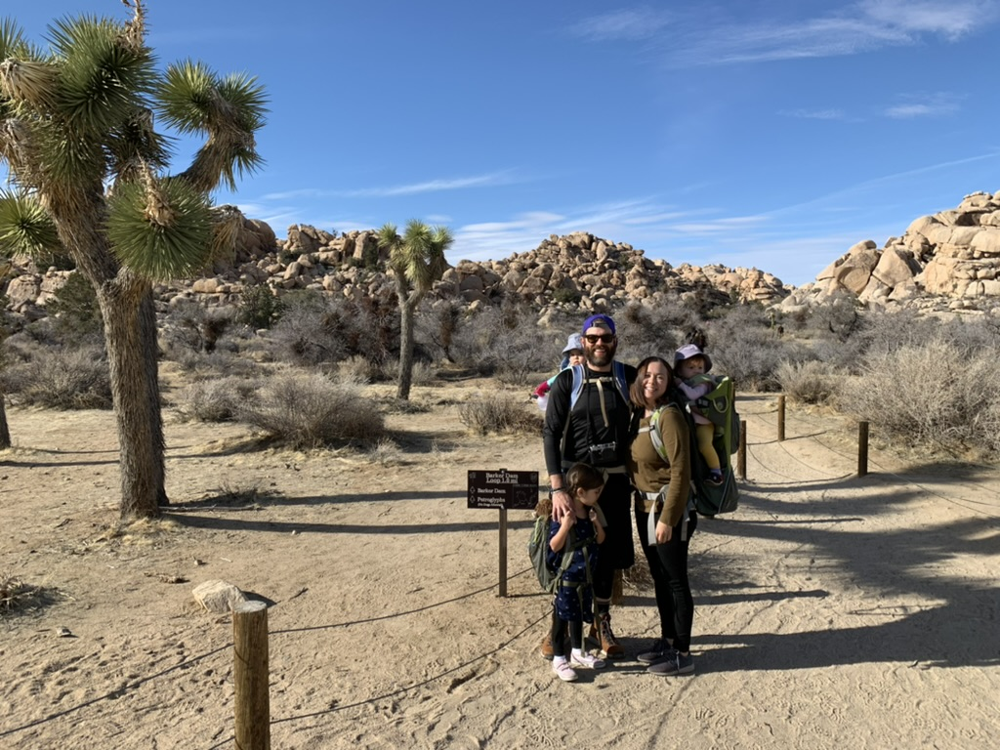
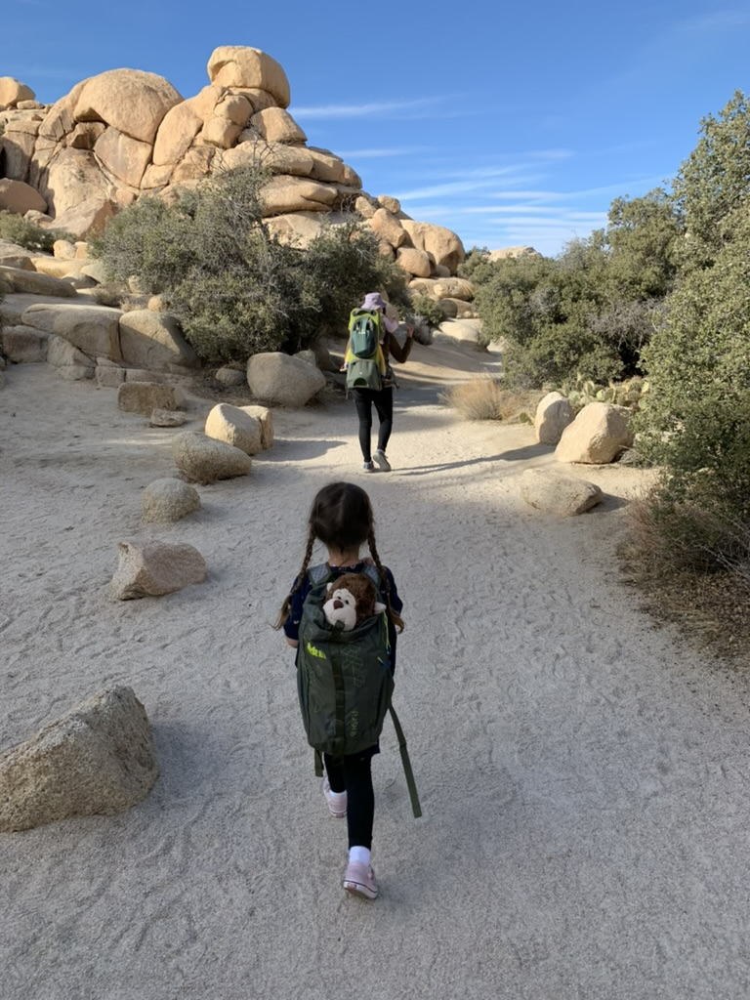
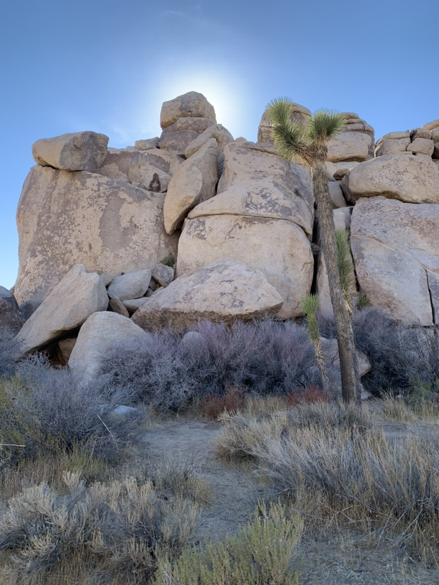

Joshua Tree National Park should be at the top of your list if you're looking for a fun-filled adventure for you and your family.
This beautiful park is located in Southern California, and it offers breathtaking landscapes and a variety of activities that the whole family can enjoy. Here are some reasons why Joshua Tree National Park is the perfect destination for a family camping trip.
My Family is Obsessed
The park is home to stunning rock formations and unique flora and fauna. You and your family can spend hours exploring the park and taking in the natural beauty that surrounds you. The park is also a great spot for stargazing, as the clear night sky allows for amazing views of the stars.
There are several campsites within the park that offer a range of amenities to make your stay comfortable. From basic campsites to RV sites, there's something to suit every family's needs. Some campsites even offer showers and flush toilets, which can be a nice luxury when you're camping with kids.
"I love climbing the rocks." - Parker & Willa Ivey (4-years-old)
Joshua Tree National Park is known for its excellent hiking trails. There are trails suitable for all levels of hikers, from easy nature walks to challenging hikes up rocky hills. You and your family can explore the park and discover hidden gems along the way.
The park is home to a variety of wildlife, including bighorn sheep, jackrabbits, and coyotes. You and your family can learn about these animals and their habitats by taking a guided tour or visiting the park's nature center.
Completely Unplug
Joshua Tree National Park is a great place to unplug and spend quality time with your family. There's no Wi-Fi or cell phone service in the park, which means you can disconnect from technology and enjoy the great outdoors without any distractions.
"This is my favorite place to go hiking." - Violet Ivey (7-years-old)
The park offers a variety of activities for families, including rock climbing, horseback riding, and birdwatching. You can even rent bikes and explore the park on two wheels. There's always something to do in Joshua Tree National Park, no matter what your family's interests are.
Camping in Joshua Tree National Park is an affordable way to enjoy a family vacation. Campsites range from $15 to $20 per night, making it an affordable option for families on a budget. Plus, with so much to see and do in the park, you won't need to spend money on additional entertainment or activities.
How to Get There
Joshua Tree National Park is located in Southern California, about 140 miles east of Los Angeles. The park is accessible by car, and there are several parking lots within the park. The park is open year-round, but it's best to visit during the spring or fall when the weather is mild.
Wonderful Weather
The weather in Joshua Tree National Park is mild year-round, making it a great place to visit any time of the year. The average temperature in the park is 70 degrees Fahrenheit, and the average low is 40 degrees Fahrenheit. The park is also known for its clear skies, which make it a great spot for stargazing.
JOSHUA TREE WEATHERHow to Book a Campsite
Booking a campsite is super simple, and some spots are first come, first serve, but other spaces go fast, so it's important to plan ahead.
To book your family adventure, click the link below to start your reservation.
https://www.recreation.gov/camping/gateways/2782Happy camping!